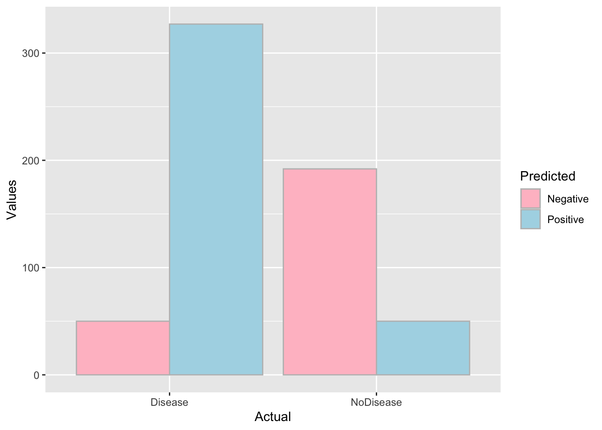

library(tidyverse)
library(gt)gt
Library
Data
# islands data in default package datasets
islands_tbl <-
tibble(
name = names(islands),
size = islands
) %>%
arrange(desc(size)) %>%
slice(1:6)
islands_tbl# A tibble: 6 × 2
name size
<chr> <dbl>
1 Asia 16988
2 Africa 11506
3 North America 9390
4 South America 6795
5 Antarctica 5500
6 Europe 3745Basic gt table on tibble
# basic gt table
gt(islands_tbl) %>%
tab_header(
title = md("Landmasses of the World"),
) | Landmasses of the World | |
|---|---|
| name | size |
| Asia | 16988 |
| Africa | 11506 |
| North America | 9390 |
| South America | 6795 |
| Antarctica | 5500 |
| Europe | 3745 |
Another table
df <- read_csv("Predicted, Actual, Values
Positive, Disease, 327
Positive, NoDisease, 50
Negative, Disease, 50
Negative, NoDisease, 192
")
df$Predicted <- as.factor(df$Predicted)
df$Actual <- as.factor(df$Actual)
df# A tibble: 4 × 3
Predicted Actual Values
<fct> <fct> <dbl>
1 Positive Disease 327
2 Positive NoDisease 50
3 Negative Disease 50
4 Negative NoDisease 192gt(df)| Predicted | Actual | Values |
|---|---|---|
| Positive | Disease | 327 |
| Positive | NoDisease | 50 |
| Negative | Disease | 50 |
| Negative | NoDisease | 192 |
ggplot(df, aes(x=Actual, y=Values, fill=Predicted))+
geom_col(position="dodge",color="gray")+
scale_fill_manual(values=c("pink", "lightblue"))